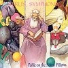
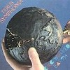
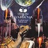
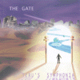

strange music page
japanese progressives * * * teru's symphonia
|
#テルズシンフォニアはノヴェラの平山照継がノヴェラ在籍時に自己のプロジェクトとして始めたグループです。ノヴェラ解散後、本格的にバンドとしての活動をはじめて現在までに7枚のフルアルバムをリリースしています。曲調は一貫してファンタジックなものです聴いてて恥かしくなるような曲もあるのですが、馴れてくるとだんだん好きになれます。
|
- 平山照継
- テルズシンフォニア
- 徳久恵美
- 4LDK
- PALE ACUTE MOON
|
#1983年に平山照継さんがまだノヴェラ在籍時に作られた1枚目のソロアルバム、ノヴェラのリズム体にPale Acute Moonの仙波基と下町香織というメンバー。
物語に沿ったアルバム構成になっています、女性ボーカルの方が結構可愛い歌い方をしてます。ちょっとアニメっぽいとか思わなくも無いのですが、いまだに好きな一枚です。
CDでは2ndから4曲がボーナストラックが追加されてます...でもこーゆーCDにこんな風に追加しなくても良いと思うのですが。
- 序奏とメインタイトル (opening and maintitle)
- Mystic World
- Nelfelti
- 少年と兵隊 (a boy and a cat soldier)
- 情景 (the scene)
Teles Pharas Maris
- Part1: Teles Pharas Maris
- Part2: 森の中の戦い (the battle in the wood)
ノイの城 (the castle of Noi)
- Part1: ノイの城 (the castle of Noi)
- Part2: おかしな住人たち (odd people)
- Part3: 別れ (parting)
- Part4: 回想～グランドフィナーレ (memeries-gradn finale)
- 13日の金曜日に
- ラヴ・ソングス
- 寂しい街で
- イノセンス (束の間の美)
- 平山照継 (guitars,vocals)
- 笹井りゅうじ (bass)
- 西田竜一 (drums,percussions)
- 仙波基 (keyboards)
- 下町香織 (vocals)
KING RECORDS/NEXUS: KICS-2526 (1983)
#平山照継名義での2枚目、Black Pageの小川文明やMr.Siriusこと宮武和広などが参加している、トータル的な作りにはなってませんが、曲想は前作の延長上のものです。
まぁ1枚目のCDに6曲中4曲が収録されちゃったので、存在価値薄いのかもしれないですけど、結構好きです。だがしかし速攻廃盤。
- 13日の金曜日に
- ラヴ・ソングス
- 淋しい街で (in the town of loneliness)
- 夢先案内会社
- シンフォニア I
- イノセンス (束の間の美)
- 平山照継 (guitars,synthesizers,vocals,compose)
- 笹井りゅうじ (bass)
- 西田竜一 (drums,percussions)
- 小川文明 (organ,piano,synthesizers)
- 下町香織 (vocals on 1.3.)(backing vocals on 2.)
- 黒田英津子 (vocals on 2.4.)
- 宮武和広 (flute on 3.6.)
KING RECORDS/NEXUS: KICS-2527 (1985)
#実は....あんまりこのアルバム気に入ってないんですけど....ちょっと全体的にだるい感じで。
メンバーチェンジ後、初のアルバム。というかバンド編成になって初のアルバムですね。やっぱ気合は感じます。
- 夜 想 曲 (melancholic garden)
- 夜の引き出し (drawer of night)
- You
- 世捨て人のうた (tears of hermit)
- ミルダ (Mildah)
- Egg the Universe
- 平山照継 (guitars,keyboards,vocals)
- 徳久恵美 (vocals)
- 井上靖 (bass)
- 古井英明 (drums,percussions)
- 仙波基 (keyboards,programming)
KING RECORDS/CRIME: K32Y-2134 (1988)
#バンド名義での２枚目、通算４枚目のアルバム。ジャケットのデザインがはじめて米田仁志さんじゃなくなって、写真が使われています。個人的には今までのジャケットデザインが好きだったので残念でした。内容は全作よりも充実していると思うのですが、このアルバム発表後keyboardの仙波基さんが脱退してしばらく活動は停止してます。
- Human race party
- 時計 (the clock)
- Midnight dreamer
- 憐れみの福音 (in the back of walfare)
- After the party
- 星の子 (twinkle children)
- 平山照継 (guitars,keyboards,vocals)
- 徳久恵美 (vocal,keyboards)
- 井上靖 (bass)
- 古井英明 (drums,percussions)
- 仙波基 (programming)
KING RECORDS/NEXUS: KICS-2529 (1989)
#MADE IN JAPAN Records に移籍後若干のメンバーチェンジをして発表されたアルバムこのアルバムもトータルな作りになっています。drumsが変わったせいかスッキリと聞き易い印象を持ちました。個人的にはTeru's Symphonia名義ではベストだと思っています。「月の夜のイカロス」とか結構かっこいいんじゃないかと。
ジャケットは米田仁志さんによるスゴイ変形ジャケット、なんでこんな凝った事出来たんだろう？

- プロローグ (prologue)
- お姫様逃げた！ (the princess is gone)
- 鬼退治 (goblin hunt)
- 大きな木 (big tree)
- 未完の幸福 (incomplete hapiness)
- 月の夜のイカロス (moonlight Icaros)
- 魔法の舞踏 (magic waltz)
- 第七夜 (the seventh night)
エピローグ (epilogue)
- 平山照継 (guitars,keyboards,programming,vocals)
- 徳久恵美 (vocal,keyboards)
- 井上靖 (bass)
- 疋田砂生 (drums,percussions)
- 中尾唱 (piano)
- 村川大輔 (synthesizer operating)
MADE IN JAPAN RECORDS/SYMPHONIA: SYCD-001 (1990)
#３年ぶりのアルバムになりますがほとんど曲的には変わってないです、平山照継さん以外の方の作曲も増えたので若干曲調の幅が広まったような気もしますがやっぱりテルシンはテルシンみたいです。リズムとエンジニアリングにはすこし不満の残る内容です。

- 夢がたり (dreamers in the past)
- わたしたちは海にとけて (mother to mother)
- パンドラの末裔 (Pandora's progeny)
- 水辺の記憶にて (stand by the edge of memories)
- アニマルライフ (animal life)
- クワイエットライフ (quiet life)
- 星の滴 (divine drops)
- 平山照継 (guitars,keyboards,programming)
- 井上靖 (bass)
- 徳久恵美 (vocal,keyboards)
- 古井英明 (drums,percussions)
- 中尾唱 (keyboards,piano,synthesizer)
MADE IN JAPAN RECORDS/SYMPHONIA: SYCD-3 (1993)
#どうも長いことお蔵入りになっていたらしい、7枚目のアルバム。フランスのMUSEAレーベルからの発売になった。内容はあいかわらずのものです、前半の方がやや良いような気もしますが。ラス曲の"Anniversario"は"狂気じみた饒舌家の音楽"に収録されていたものの別バージョンのようです。あと、新しいkeyboardのちえぞうさんが加入しています。また現在はさらにメンバーチェンジをしてbassとkeyboardに元Starlessの大久保寿太郎さんと青木彰一さんが参加、drumsの方も代ったようです。

- Do Androids
- 作品No.27 「絵」 (the picture)
- Maria
- Destination
- やわらかい夜 めざめよい朝 (from softly night - till blessing morning)
- 帆柱の絆 (maiden voyage)
- Anniversario
- 平山照継 (guitars)
- 井上靖 (bass)
- 徳久恵美 (vocal,keyboards)
- 古井英明 (drums,percussions)
- ちえぞう (keyboards)
MUSEA: FGBG-4234.AR (1997.10)
#前作から丁度一年振りくらいですかね、割と良いペースなような気もしますけど...例によって今回も国内発売は無し。フランスMUSEAレーベルからのリリース。
メンバーがだいぶ変わってます、SCHEHERAZADE,STARLESSの大久保寿太郎さんがベースに、ドラムが佐藤潤一さんに、キーボードが青木彰一さんになっています。
これがMADE IN JAPAN RECORDSからのリリースだったらモノスゴイあおり文が入るでしょうね、"重厚かつ攻撃的なシンフォニック..."みたいな。メンバーチェンジのお陰で演奏がとても安定しています、音の方は相変わらずですね、円熟作。この手の音好きな人にはマストでしょう。

- THE GATE OF 21st CENTURY
- HUMANIZER (DREAM OF AN ANDROID)
- ENTRANCE THE VISIONS
- ETERNAL SINNER
- UNKNOWN LIVES
- WISH
- THE GIPSY'S PARADE
- END OF MILLENIUM
- EXIT FOR D.N.A.
- 平山照継 (guitars)
- 大久保寿太郎 (bass)
- 徳久恵美 (vocals)
- 佐藤潤一 (drums)
- 青木彰一 (keyboards)
MUSEA: FGBG-4302.AR (1999.11)
#たしかクリスマスあたりに出たテルシンのMEGUさんのソロアルバム、七つの夜の物語収録の２曲目はボーカルバージョンになっています。４曲めなんかはテルシンとは違った路線で結構良いと思います。fretless bassのT.N.ってのは永井敏巳さんかな？
- Snowing
- 大きな木
- 賛美歌 -Hymn-
- Break of Dawn
- 徳久恵美 (vocals,keybaords)
- Nishida Emiko (drums on 2.)
- T.N. (bass on 2.4.)
- Fujita Toshiko (chorus on 3.)
- Hatta Toshihiko (chorus on 3.)
- 平山照継 (programming)
MADE IN JAPAN/SYMPHONIA: SYCD-2
#テルズシンフォニアのkeyboardの仙波基によるプロジェクト、打ち込みを主体とした女性ボーカルのポップス。
Pale Acute Moonのボーナス曲に近い...Virginia Astleyに似た曲調。ボーカルの宮本佳子は元
スターレスの人です。
8cmシングルのミニアルバムなんで....ちょっと現在は入手困難だと思います。
- 4LDK
- Opus 2
- Spring song
- Music for plants
- 仙波基 (all instruments,arrangement,programming,voices)
- 宮本佳子 (vocals)
- 宮武和弘 (flute on 1.2.)
- Higa Yasuhisa (guitars)
- Matsumoto Kouji(keyboards on 3.4.)
- 井上靖 (bass on 3.)
KING RECORDS/CRIME: K13Y-20013 (1988)
#1985年にリリースされた仙波基さんのバンドの唯一のアルバム。当時の日本のシンフォ系らしい音になっています。Teru's Symphoniaにおいても重要な存在であったことがわかる内容。ＣＤだけ追加収録されたAFTER MOON IIはその後の4LDKにつながる曲です。
-Suite: looking for NEWTOPIA-
- COLLAGE
- Chapter 1 NEWTOPIA
- Chapter 2 THE END OF PARTY
- Chapter 3 TIME TRIP
- REFRAIN THE END OF PARTY II
- Chapter 4 AFTER MOON
- Chapter 5 IMPRESSION
- Chapter 6 DAY BREAK
- CODA
- AFTER MOON II
- 仙波基 (keyboards,vocals)
- 今村まさひろ (guitars,vocals)
- 浜田勝憲 (bass)
- 赤堀信治 (vocals)
- 寺下享一 (drums)
- 井上靖 (bass on 7.)
- 下町香織 (vocals)
KING RECORDS/CRIME: K32Y-2137 (1985)